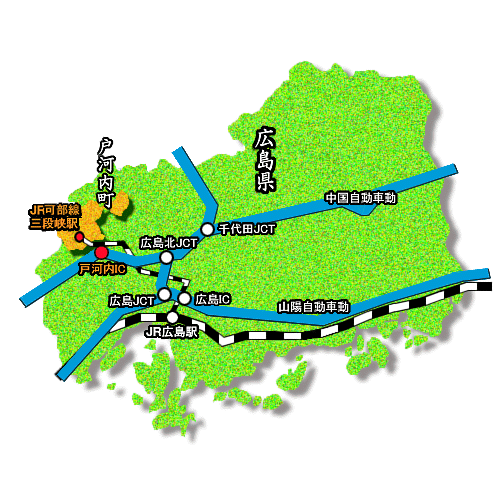
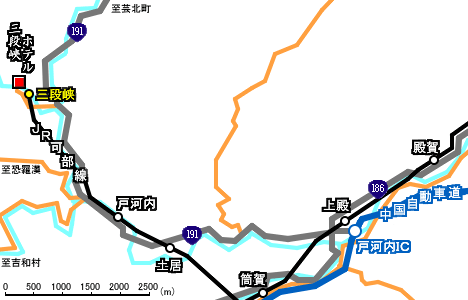
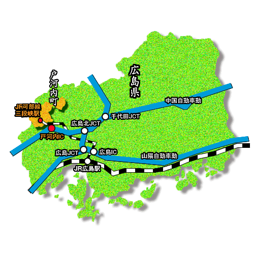
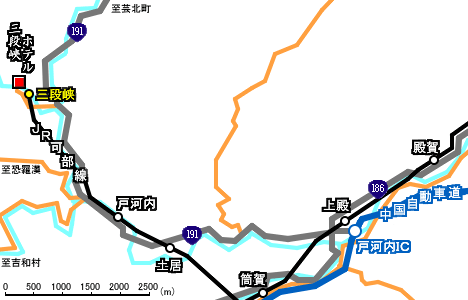
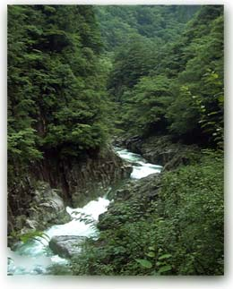
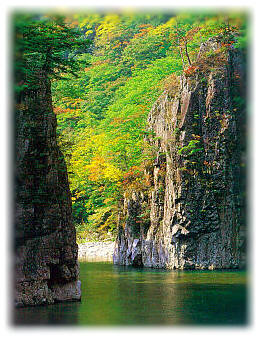
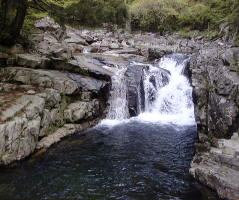
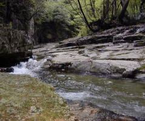
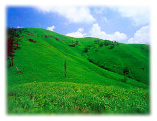

| ■ 近辺地図（地図をクリックすると大きく表示します） | |
| 広域図 | 詳細図 |
|  |  |
| で表示はコチラをクリック | |
| で表示はコチラをクリック | |
| アクセス方法 |
| ■ 当館へのアクセス方法 |
| 広島駅よりバスセンター(紙屋町)まで市内電車がおすすめです | |
| 自動車 | 中国自動車道戸河内インターで下りそのまま直進 国道１９１号を戸河内町方面に北上 約７キロ地点落合（赤）橋を左折し８００ｍほど進んｔだ突き当たりです 戸河内インターより１０分 ８㎞ 駐車場：乗用車３０台、又はバス６台まで収容可 |
| バス |
広島バスセンターより三段峡行きバスを利用（所要時間：２時間１５分） 終点三段峡バス停より１００ｍ 高速バスでは所要時間１時間１５分 |
| バス時刻表(2007.12.3改正) |
|||||||||||||||||||||||||||||||||||||||||||||||||||||||||||||||||||||||||||||||||||||||||||||||||||||||||||||||||||||||||||||||||||||||||||||||||||||||||||||||||||||||||||||||||||||||||||||||||||
|
|
||
| ■ 近辺地図（地図をクリックすると大きく表示します） | |
| 広域図 | 詳細図 |
|  |  |
| で表示はコチラをクリック | |
| で表示はコチラをクリック | |
| ■西中国山地国定公園 特別名勝 三段峡 三段峡は全長１６キロにも及ぶ柴木川（太田川上流）の雄大な断崖や瀑布などの連続する日本に五つしかない特別名勝の渓谷です。 春は、2000種の草木の新緑美 夏は、渓谷と原生林から吹き出る天然ｸｰﾗｰ 秋は、日本一の色彩られる紅葉 【三段峡の楽しみかた】 三段峡、中でも、三つ滝、竜門、三段滝、二段滝、猿飛、黒淵は五大壮観と言われています。 特に三段峡の魅力は、他の景勝地では味わえない入口から黒淵までの3キロに及ぶ散歩道です。この３キロは、滝、淵、断崖、大小の岩岩、原生林の森が柴木川に沿って連続的に様々な景観となって次々と展開しています。 往復２０分ｺｰｽ ゆっくり歩いて入口←→竜の口 往復１時間ｺｰｽ ゆっくり歩いて入口←→石樋 往復２時間ｺｰｽ ゆっくり歩いて入口←→黒淵 楽な一日ｺｰｽ 入口→定期バスで出合→歩いて猿飛二段滝、 三段滝→出合から定期バス→入口 １日ｺｰｽ 歩いて入口→竜の口→石樋→黒淵→ 猿飛二段滝→三段滝→出合から定期バス→入口 （健脚） ←（あるいは歩いて入口まで） 中国地方の木の種類のすべてが見られる秘境。ｵｵﾙﾘをはじめ多種類の鳥、まばゆいばかりの新緑、厳しい冷え込みのため彩られる美しい紅葉。これらに接することで、都会のストレスはすっかり忘れてしまうでしょう。 |
|

|
赤滝（あかだき）
当館より、峡谷を２５分ほど歩くと、遊歩道の右側に、まっ赤な岩盤がひときわ目をひく、小さな滝がある。赤く見えるのは、流水中の微生物の藻が付着したもので、このような赤い滝はほかにもいくつか見ることができる。 |
|  | 石樋（いしどい）
当館より、峡谷を３０分ほど歩くと、左のように、岩盤の河床が２００ｍにわたって水路のように続いているようすが見られる。ここは、その形から「石樋」と呼ばれている。黒淵まででも一番の見所。 |
|  | 黒淵（くろぶち）
当館より、峡谷を４５分ほど歩いたところには、峡谷随一の景観である黒淵がある。この淵の、もっとも深いところの水深は、およそ５ｍあり、水が黒く見えることから、このような名称で呼ばれている。遊歩道は淵をまいて高いところを通り、そこからの眺めはひじょうにすばらしい。また、渡し船が運航されており、これを利用すると水の色と、水面に映る景色を楽しむことができる。 |
| ■奥三段（おくさんだん） 二段滝からさらに３０分ほど歩くと、田代出合というところで、林道に合流する。ここをさらに進むと、奥三段の入り口に到達する。奥三段は、ほとんど人手が入っていない、まさに自然そのものが残る秘境である。 ここは、遊歩道が整備されていないので、山歩きの初心者は、案内人を必要とする。上級ハイカー向けといえるが、ぜひ、いつかは一度は訪れたいところである。 |
  |
| ■深入山（しんにゅうざん） 三段峡の東側を、ゆったりと取り囲んでいる女性的な山です。山腹には、蔵座と呼ばれる高原があって、牛の放牧場になっています。夏場はキャンプ、冬場にはスキーヤーたちで賑わいます。 |
 |
|
|
 |
■恐羅漢（おそらかん）スキー場 西日本では最高の積雪と雪質を誇っています。 シーズンには、県内外から多くのスキーヤーが押し 寄せ、初級から上級まで滑れるゲレンデは人で いっぱい。 年券のみ191ｽｷｰ場と恐羅漢スキー場共通です。
|
 |
| ■ 八幡高原１９１スキー場 | お問合せ：（０８２６）3７－０３４１ | |
| ■ パインリッジリゾート芸北スキー場 | お問合せ：（０８２６）3５－０２５０ | |
| ■ 大佐スキー場 | お問合せ：（０８２６）3５－００３８ | |
| ■ ユートピアサイオト | お問合せ：（０８２６）3５－１１７７ | |
| ■ ホワイトバレー松原 | お問合せ：（０８２６）2９－００４１ | |
| ■ 国設おそらかんスキー場 ■ おそらかんスキー場 |
お問合せ：（０８２６）28－７０３１ お問合せ：（０８２６）28－７０07 |
|
| ■ 瑞穂ハイランド | お問合せ：（０８55）85－11１１ | |
当ページはリンクフリーです。相互リンクして頂ける方も募集しています
| 安芸太田町観光協会 | 広島県戸河内町を紹介しているサイト 「運営」・・・安芸太田町観光協会 |
| マピオン | 正確な地図をご利用できます 「運営」・・・地図のMapion |
| 自然館 | 鮎の自然館・スキーの自然館 是非見て下さい。 |
| 三段峡の写真家 | 「源流」のカメラマン 広島市でﾌｫﾄｼｮｯﾌﾟ 「運営」・・・光広 |
| エルフル温泉探検隊 | 広島県を中心とした近隣各県、周辺地域の温泉情報満載のサイト 「運営」・・・広島県中小企業共済協同組合 |
| 小川鉄工株式会社 | 吉田町で機械加工をやっている，社長も仕事もまじめな会社。ホームページは遊びごころにあふれています。 |
| 株式会社中前 | 戸河内町を中心とする，お祭りや神楽などの現地情報を発信するページ。 |
| モンペの広島県 日帰り温泉リスト |
広島県内の気軽に入浴できる天然温泉を紹介されているサイト 「運営」・・・個人 |
| 童謡・温泉・Ｏｕｔｄｏｏｒ | 温泉めぐり紹介が充実しています。 |
| 可部線文芸賞、写真賞 | 可部線の廃止を憂い駅、電車を題材に文芸作品、写真作品を募集している。 「運営」・・・猪さん |
| 可部線プロジェクト | 可部線全区間の沿線の写真 「運営」・・・MATIAさん |
| 宿ネット 宿の出合いサイト |
全国のホームページを運営している宿！ 「運営」・・・全旅連 |
| INFO BAZAR | 写真とカメラのページ。三段峡の写真集もあり。 「運営」・・・MATIAさん |
| kurasanのhomupage | 戸河内出身７０の手習いで自慢のホームページ。 「運営」・・・田形さん |